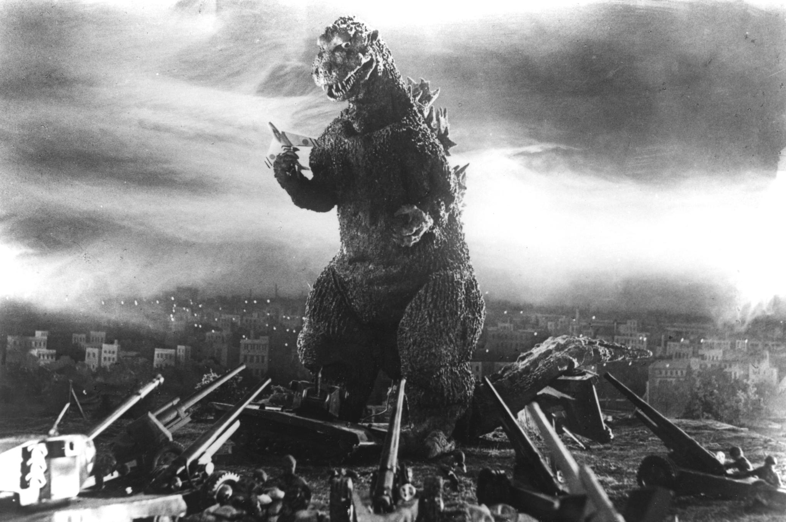

Godzilla Franchise
The Godzilla Franchise started in 1954 and has gone on all the way to today with 36 movies (32 Japanese and 4 American), several television shows, and countless spinoffs. Originally an allegory for the atomic bombing of Hiroshima and Nagasaki at the end of World War 2, Godzilla was the living embodiment of nuclear weapons and nuclear energy overall. The message of the franchise has changed over time to keep the movies up to date with the current issues of the time, Cold War in the 80's, Natural Disasters in the 2010's, Fukushima in 2016. Godzilla has been able to adapt to the important issues of the time while also being entertaining to the viewers if the movies. Divided into five seperate eras of films all with their own identities and styles showing how the franchise has evolved over the past 68 years.
The Showa Era is the first era of Godzilla movies lasting from 1954 to 1975. It is the largest era with the most films in the franchise, 15, and the development and release of numerous spinoffs. Starting with the original 1954 film and largely established the forumla that has been used up to today. It is the era with the most spinoff movies, almost like a cinematic universe that was loosely connected.
The Heisei Era lasted 11 to 14 years from 1984 to 1995/98 reestablishing the series serious tone and rebooting the franchise ingnoring all the films except the original. The series had 7 movies all in one continuity that was connected with each film building on from the other. The only spinoffs were three Mothra films after Godzilla was put to rest in 1995 lasting for three movies.
The Millenium Era lasted 6 years, 1999 to 2004, and was six Godzilla films that all exist seperately from each other. All these films take place in seperate continuities with next to no connections to the other films. The era was created after the failure of the first American film which was scene as a failure and not getting the monster correct. There was no spinoffs during this era.
The Reiwa Era started in 2016 and is still going on as of 2022. There are only 4 films and a television show which have been more experimental than the previous films. There are no spinoffs at the moment, new projects are in the works but nothing has been announced.
The Monsterverse is the only American Era started in 2014 and is still going on as of 2022. There are 3 Godzilla films and a spinoff released with 2 television shows in development. The films started as a realistic take on the franchise taking a more grounded approach before slowly entering more science fiction territory with future technology and crazier plots.